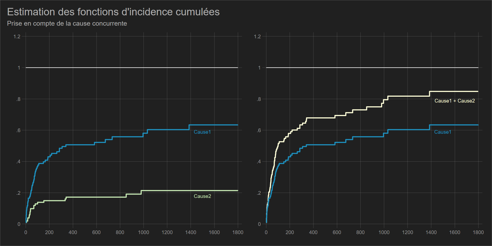

Risques concurrents
1 Présentation du problème
- On étudie un processus dont l’échéance a plusieurs modalités (cause): la mortalité par cause, les types de sortie du chômage (formation, emploi, radiation), les types de sortie de l’emploi (chômage, longue maladie, sortie du marché du travail hors retraite) ,les lieux de migration, la mise en union par mariage ou cohabitation, type de rupture d’union (séparation-divorce, veuvage).
- L’analyse des risques concurrents est un cas particulier des modèle “multi-états” où les différents risques sont considérés comme absorbants.
- En présence de risques concurrents, l’estimation de Kaplan-Meier ne peut se faire que sous l’hypothèse d’indépendance entre chacun des risques. Sinon l’estimateur de Kaplan-Meier n’est plus une probabilité.
- Une estimation de type KM d’un évènement en concurrence avec d’autres impose que ces derniers soient traités comme des censures à droites non informatives. Mais il n’est pas possible de tester cette hypothèse.
1.1 Risques “cause-specific” et biais sur les estimateurs KM
- Si les risques ne sont pas indépendants les uns par rapport aux autres, la somme des estimateurs de (1-KM) pour chaque risque n’est pas égale - elle est supérieure - à l’estimateur de (1-KM) où les risques concurrents sont regroupés en un évènement unique.
- Le risque calculé en considérant les risques concurrents comme des censures à droite est appelé “cause-specific risk”.
Cause specific risk
Pour le risque de type \(k\), le risque “cause-spécifique” (traduction propre?) en \(t_i\) est égal à:
\[h_k(t_i)=\frac{d_{i,k}}{R_i}\] Où \(d_{i,k}\) est le nombre d’évènement de type \(k\) survenu en \(t_i\) et \(R_i\) la population soumise en \(t_i\).
Illustration du biais avec l’estimation standard: \(1-KM_k>1\)
Conséquence: si les risques ne sont pas indépendants, la fonction de survie n’exprime plus une probabilité.
Exemple sur les décès causés par une malformation cardiaque aigüe
Dans la base d’origine, il n’y a pas cette dimension de risque concurrent. Une sortie concurrente a donc été simulée, qu’on labellisera “suicide” (problème tirer de l’analyse du registre mucoviscidose traité par l’Ined). Ce risque entre en concurrence avec le décès directement issu de la malformation (détresse respiratoire aigüe).
> ear
(Heart transplant data)
| Survival Status
| (1=dead)
compet | 0 1 | Total
-----------+----------------------+----------
0 | 28 0 | 28
1 | 0 56 | 56
2 | 0 19 | 19
-----------+----------------------+----------
Total | 28 75 | 103 Variable compet: cause 1 => décès directement provoquer par la malformation, 2 => suicide.
Lorsqu’on a analysé le décès par la méthode KM, la proportion de survivants était de 15%, soit une proportion de personnes décédées de 85%.
Si on applique la méthode de Kaplan Meier à la cause 1 en traitant la cause 2 (suicide) comme une censure à droite, et en analyse la cause 2 en traitant la cause 1 comme une censure à droite:
% de personnes décédées par insuffisance respiratoire: 83% % de personne décédées par sucide: 12%
La somme de ces 2 proportion est égale à 95% soit 10 points au dessus de l’estimateur KM sur l’évènement unique.

Les deux risques ne sont donc pas indépendants. Intuitivement le suicide a pu être causé, au moins en partie pour certaines personnes, par leur état de santé.
2 Estimations en présence de risques concurrents
2.0.1 Estimation non paramétrique
- Estimateur de Nelson Aalen: il s’agit du risque instantané cumulé. Comme il ne s’agit pas d’une probabilité, il a été longtemps utilisé pour mesurer l’incidence dans une logique de risques “cause spécifique”:
\[H_k (t_i)=\sum_{t_i\leq t}\left(\frac{e_{i,k}}{n_i}\right) \]
- L’estimateur le plus utilisé est la fonction d’incidence cumulée (Kalbfleisch-Prentice, Marubini-Valscchi):
- Il repose sur une probabilité tout en supportant la non indépendance des risques.
- Son interprétation est identique à la fonction de répartition \(F(t)=1-S(t)\). Cette fonction est donc croissante.
- Il est possible de tester les différences entres CIF: test de Gray ou test de Pepe-Mori.
La fonction d’incidence cumulée
- Si \(h_k(t_i)\) est le risque “cause-spécifique” en \(t_i\) et \(S(t_i-1)\) l’estimateur de Kaplan-Meier en \(t_i-1\) lorsque tous les risques sont regroupés en un évènement unique, l’incidence cumulée pour le risque \(k\) en \(t_i\) est égale à:
\[IC_k(t_i)= \sum_{t_i\leq t}S(t_i-1)h_k(t_i)\]
- L’incidence cumumée de \(k\) en \(t_i\) ne dépend donc pas seulement des individus ayant observé ce risque, mais aussi du nombre de personnes qui n’ont pas encore observés les autres risques. Cette dernière information est donnée par \(S(t_i-1)\).
- L’incidence cumulée peut ainsi s’interpréter comme la proportion d’individus qui sont sorti du risque jusqu’en \(t_i\) en raison de \(k\).

running D:\Marc\SMS\FORMATIONS\2020\analyse duree Ined\analyse durees\profil> o ...
(Heart transplant data)
failure: compet == 1
competing failures: compet == 2
Time CIF SE [95% Conf. Int.]
--------------------------------------------------
1 0.0097 0.0097 0.0009 0.0477
2 0.0194 0.0136 0.0038 0.0619
3 0.0485 0.0212 0.0181 0.1022
5 0.0680 0.0248 0.0300 0.1273
6 0.0874 0.0278 0.0429 0.1515
8 0.0971 0.0292 0.0497 0.1634
9 0.1068 0.0304 0.0566 0.1751
12 0.1166 0.0316 0.0638 0.1868
16 0.1264 0.0328 0.0711 0.1984
18 0.1362 0.0338 0.0785 0.2099
21 0.1559 0.0358 0.0937 0.2325
30 0.1657 0.0367 0.1014 0.2437
32 0.1756 0.0376 0.1093 0.2550
35 0.1856 0.0384 0.1173 0.2662
37 0.1955 0.0392 0.1253 0.2773
39 0.2055 0.0400 0.1335 0.2884
40 0.2156 0.0407 0.1418 0.2996
45 0.2256 0.0414 0.1502 0.3107
50 0.2357 0.0421 0.1586 0.3217
53 0.2458 0.0427 0.1671 0.3327
58 0.2559 0.0433 0.1757 0.3436
61 0.2660 0.0439 0.1843 0.3544
66 0.2761 0.0445 0.1930 0.3652
68 0.2861 0.0450 0.2018 0.3759
69 0.2962 0.0454 0.2106 0.3866
72 0.3063 0.0459 0.2195 0.3973
77 0.3164 0.0463 0.2284 0.4079
78 0.3265 0.0467 0.2374 0.4184
81 0.3365 0.0471 0.2464 0.4289
85 0.3466 0.0474 0.2554 0.4393
90 0.3567 0.0478 0.2645 0.4497
96 0.3668 0.0481 0.2737 0.4601
100 0.3769 0.0484 0.2829 0.4704
102 0.3870 0.0486 0.2921 0.4807
110 0.3972 0.0489 0.3016 0.4911
149 0.4078 0.0491 0.3112 0.5019
153 0.4183 0.0494 0.3209 0.5125
186 0.4291 0.0496 0.3309 0.5235
188 0.4399 0.0498 0.3409 0.5343
207 0.4506 0.0500 0.3509 0.5451
263 0.4614 0.0502 0.3610 0.5559
285 0.4836 0.0505 0.3818 0.5780
308 0.4947 0.0506 0.3923 0.5890
340 0.5058 0.0507 0.4028 0.5999
583 0.5211 0.0513 0.4162 0.6158
733 0.5391 0.0524 0.4313 0.6351
852 0.5584 0.0535 0.4475 0.6555
995 0.5811 0.0550 0.4657 0.6801
1032 0.6039 0.0561 0.4850 0.7036
1386 0.6343 0.0584 0.5084 0.7362
failure: compet == 2
competing failures: compet == 1
Time CIF SE [95% Conf. Int.]
--------------------------------------------------
2 0.0194 0.0136 0.0038 0.0619
16 0.0391 0.0191 0.0128 0.0897
17 0.0489 0.0213 0.0182 0.1029
28 0.0587 0.0232 0.0240 0.1157
36 0.0686 0.0250 0.0302 0.1286
40 0.0787 0.0267 0.0368 0.1413
43 0.0888 0.0283 0.0436 0.1539
51 0.0989 0.0297 0.0506 0.1663
68 0.1090 0.0310 0.0578 0.1785
72 0.1190 0.0323 0.0651 0.1905
80 0.1291 0.0334 0.0726 0.2024
165 0.1396 0.0346 0.0804 0.2149
219 0.1504 0.0358 0.0886 0.2276
334 0.1615 0.0370 0.0970 0.2406
342 0.1730 0.0383 0.1058 0.2540
675 0.1910 0.0414 0.1177 0.2777
979 0.2138 0.0457 0.1321 0.3086Compararaison des CIF
- Test de Pepe & Mori: teste l’aire entre 2 courbes d’incidences et seulement 2. Disponible avec Stata (commande externe), pour SAS, il faut récupérer une macro externe (https://onlinelibrary.wiley.com/doi/pdf/10.1002/9780470870709.app2).
- Test de Gray: est basé sur une autre mesure du risque en évènement concurrent. Il s’agit du “subdistribution risk” (“risque de sous-répartition”, A.Latouche). Son interprétation n’est pas aisé, mais il est directement lié à l’estimation des CIF. Disponible avec SAS et R.
- On peut toujours tester les différences entre les risques “causes spécifiques” avec le test du log-rank (estimateur Nelson-Aalen). Mais on ne teste pas des différences entre CIF.
Test de Gray (R)
Warning: package 'cmprsk' was built under R version 3.4.4Tests:
stat pv df
1 5.7834605 0.01617766 1
2 0.1293076 0.71915098 1
Estimates and Variances:
$est
500 1000 1500
0 1 0.56009367 0.6074425 0.6738971
1 1 0.09090909 0.3333333 NA
0 2 0.17076543 0.1931938 0.1931938
1 2 0.18181818 0.3030303 NA
$var
500 1000 1500
0 1 0.002938061 0.003399588 0.004176484
1 1 0.008347107 0.031135712 NA
0 2 0.001650185 0.002076694 0.002076694
1 2 0.015060708 0.026432450 NA2.1 Estimation semi paramétrique et paramétrique
Modélisation des risques ‘cause-specific’
Modèle de Cox «standard» pour chaque évènement, les évènements concurrents sont traités comme des censures à droite. Aucune interprétation sur les incidences cumulées ne peut-être faite.
running D:\Marc\SMS\FORMATIONS\2020\analyse duree Ined\analyse durees\profil> o ...
failure _d: compet == 1
analysis time _t: stime
Iteration 0: log likelihood = -222.54837
Iteration 1: log likelihood = -215.02113
Iteration 2: log likelihood = -214.60293
Iteration 3: log likelihood = -214.59123
Iteration 4: log likelihood = -214.59121
Refining estimates:
Iteration 0: log likelihood = -214.59121
Cox regression -- Breslow method for ties
No. of subjects = 103 Number of obs = 103
No. of failures = 56
Time at risk = 31938
LR chi2(3) = 15.91
Log likelihood = -214.59121 Prob > chi2 = 0.0012
------------------------------------------------------------------------------
_t | Haz. Ratio Std. Err. z P>|z| [95% Conf. Interval]
-------------+----------------------------------------------------------------
year | .8972419 .0690441 -1.41 0.159 .7716286 1.043304
age | 1.028731 .0158704 1.84 0.066 .9980913 1.060312
surgery | .2421233 .1459256 -2.35 0.019 .0743062 .7889478
------------------------------------------------------------------------------Modèle de Fine-Gray: subdistribution hazard regression
Modèle de type semi-paramétrique avec une redéfinition du risque lié à l’estimation des incidences cumulées (voir test de Gray). La différence avec le Cox classique réside dans le calcul du risk-set : les évènements concurrents ne sont pas considérés comme des censures, on laisse les individus leur «survivre» jusqu’à la durée maximumale observée dans l’échantillon.
Pour les questions liées à l’interprétation de ces deux types de modèles, se reporter à: https://onlinelibrary.wiley.com/doi/epdf/10.1002/sim.7501
Modèle à temps discret
- Il s’agit d’une extension du modèle à évènement unique (toutes causes regroupées) avec le modèle logistique multinomial à temps discret.
- S’il ne permet pas une interprétation dirigée sur les incidences cumulées, les risques concurrents ne sont pas traitées comme des censures à droite.
Ici le modèle à temps discret a été estimé sur les jours d’exposition, en splittant la base aux temps d’évènement (cf Cox)
running D:\Marc\SMS\FORMATIONS\2020\analyse duree Ined\analyse durees\profil> o ...
Iteration 0: log likelihood = -320.63742
Iteration 1: log likelihood = -293.94986
Iteration 2: log likelihood = -287.00623
Iteration 3: log likelihood = -286.85587
Iteration 4: log likelihood = -286.85569
Iteration 5: log likelihood = -286.85569
Multinomial logistic regression Number of obs = 1,164
LR chi2(8) = 67.56
Prob > chi2 = 0.0000
Log likelihood = -286.85569 Pseudo R2 = 0.1054
------------------------------------------------------------------------------
e | Coef. Std. Err. z P>|z| [95% Conf. Interval]
-------------+----------------------------------------------------------------
0 | (base outcome)
-------------+----------------------------------------------------------------
1 |
t | -.0833633 .0194683 -4.28 0.000 -.1215204 -.0452061
year | -.1307793 .0794859 -1.65 0.100 -.2865688 .0250102
age | .032855 .016139 2.04 0.042 .001223 .0644869
surgery | -1.525699 .6079702 -2.51 0.012 -2.717299 -.3340998
_cons | 5.837775 5.740758 1.02 0.309 -5.413903 17.08945
-------------+----------------------------------------------------------------
2 |
t | -.0905817 .0337391 -2.68 0.007 -.156709 -.0244543
year | -.1859397 .1393032 -1.33 0.182 -.458969 .0870896
age | .0406961 .0291411 1.40 0.163 -.0164195 .0978117
surgery | -.2487657 .6640659 -0.37 0.708 -1.550311 1.052779
_cons | 8.187169 10.05178 0.81 0.415 -11.51396 27.8883
------------------------------------------------------------------------------3 Evènements récurrents et modèles dit “Cure”
[A FAIRE]
- Deuxième extention possible après les risques concurrents. Introduire les notions d’hétérogénéité non observable et de fragilité (frailty). - Modèle dit “Cure”: sur la première séquence, phénomène d’imunité; sur une séquence supérieure, présence d’observations définitivement traitées (Cure). S’observe lorsque les fonction de survie présente un longue asymptote (droite horizontale) et en particulier lorsque qu’il y a peu d’évènement observés (% de survivants élevés). Question: qui est réellement soumis au risque?